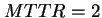
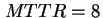
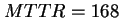
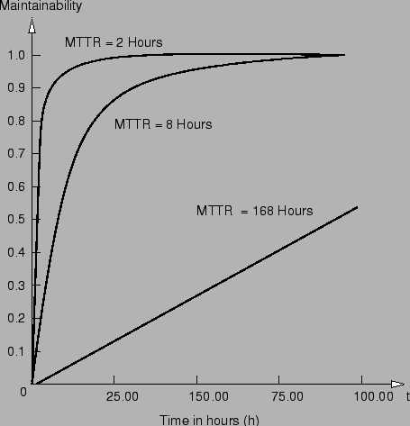

Next: หัวข้อสรุป
Up: แบบจำลองความสามารถในการบำรุงรักษา
Previous: แบบจำลองความสามารถในการบำรุงรักษา
Contents
Index
สมมุติให้ระบบคอมพิวเตอร์มีค่า MTTR ที่แตกต่างกันตามลำดับดังนี้  ในการซ่อมภายใน  ในการเรียกการซ่อมจากบริษัทภายนอก และ  ในการเรียกซ่อมจากผู้ผลิต รูป 13.7 แสดงค่าความสามารถในการบำรุงรักษาเทียบกับเวลา
Figure 13.7:
ความสามารถในการบำรุงรักษา (Maintainability) เทียบกับเวลา ในค่า  ที่แตกต่างกัน
ที่แตกต่างกัน
|

|
Vara Varavithya
2002-03-09